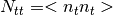

utilities package¶
Submodules¶
utilities.IOfiles module¶
- utilities.IOfiles.plot_histogram_eigenvalues(z)[source]¶
save a plot containing an histogram of the eigenvalues z
- utilities.IOfiles.read_from_data(filename, pol, npairs=None)[source]¶
Read a hdf5 file preprocessed by the AnalysisBackend of the Polarbear Collaboration.
Parameters
- filename:{str}
path to the hdf5 file
pol:{int} - 1: read data for temperature only data; - 3: read for polarization data;
- -npairs:{int}
- set how many bolo_pairs to read, default is None.
- utilities.IOfiles.read_from_data_with_subscan_resize(filename, pol, npairs=None)[source]¶
Read a hdf5 file preprocessed by the AnalysisBackend of the Polarbear Collaboration by considering, as chunks of data, only the subscan samples.
Parameters
- filename:{str}
path to the hdf5 file
pol:{int} - 1: read data for temperature only data; - 2,3: read for polarization data;
- -npairs:{int}
- set how many bolo_pairs to read, default is None.
- utilities.IOfiles.read_from_hdf5(filename)[source]¶
Read from a hdf5 file whose datasets are created by the routine utilities_functions.system_setup
- utilities.IOfiles.read_ritz_eigenvectors_from_hdf5(filename, npix)[source]¶
read from hdf5 file the approximated eigenvectors related to the deflation subspace.
- utilities.IOfiles.show_matrix_form(A)[source]¶
Explicit the components of the Linear Operator A as a matrix.
utilities.healpy_functions module¶
- utilities.healpy_functions.compare_maps(outm, inm, pol, patch, mask, figname=None)[source]¶
Print on device the input map, the one processed from datastream and their difference.
- utilities.healpy_functions.obspix2mask(obspix, pixs, nside, fname, write=False)[source]¶
From the observed pixels to a binary mask, (mask[obspix]=1 , 0 elsewhere)
Parameters
- osbpix:{array}
pixels observed during the scanning of the telescope. Already ordered in the HEALPIX pixelization.
- nside: {int}
Healpix parameter to define the pixelization grid of the map
- fname:{str}
path to the fits file to store/read the map
- write:{bool}
if True it writes onto the file, it reads from it otherwise
Returns
- mask :{array}
- utilities.healpy_functions.reorganize_map(mapin, obspix, npix, nside, pol, fname, write=False)[source]¶
From the solution map of the preconditioner to a Healpix map. It specially split the input array mapin which is a IQU for a polarization analysis in to 3 arrays i,q,u.
Parameters
- mapin:{array}
solution array map (size=npix*pol);
- obspix:{array}
array containing the observed pixels in the Healpix ordering;
npix:{int}
- nside: {int}
the same as in obspix2mask;
pol:{int}
fname:{str}
write:{bool}
Returns
- healpix_map:{list of arrays}
pixelized map with Healpix.
utilities.linear_algebra_funcs module¶
- utilities.linear_algebra_funcs.dgemm(A, B)[source]¶
Compute Matrix-Matrix multiplication from the BLAS routine DGEMM If A ,B are ordered as lists it convert them as matrices via the `` numpy.asarray`` function.
utilities.utilities_functions module¶
- utilities.utilities_functions.angles_gen(theta0, n, sample_freq=200.0, whwp_freq=2.5)[source]¶
Generate polarization angle given the sample frequency of the instrument, the frequency of HWP and the size n of the timestream.
- utilities.utilities_functions.filter_warnings(wfilter)[source]¶
wfilter: {string} - “ignore”: never print matching warnings; - “always”: always print matching warnings
- utilities.utilities_functions.noise_val(nb, bandwidth=1)[source]¶
Generate elements to fill the noise covariance matrix with a random ditribution .
Parameters
- nb : {int}
number of noise stationary intervals, i.e. number of blocks in N_tt’.
- bandwidth : {int}
the width of the diagonal band,e.g. :
- bandwidth=1 define the first up and low diagonal terms
- bandwidth=2 2 off diagonal terms.
Returns
- t: {list of arrays }
shape=(nb,bandwidth)
- diag : {list }, size = nb
diagonal values of each block .
- utilities.utilities_functions.output_profile(pr)[source]¶
Output of the profiling with profile_run().
Parameter
- pr:
instance returned by profile_run()
- utilities.utilities_functions.pairs_gen(nrows, ncols)[source]¶
Generate random int numbers to fill the pointing matrix for observed pixels. Implemented even for polarization runs.
- utilities.utilities_functions.subscan_resize(data, subscan)[source]¶
Resize a tod-size array by considering only the subscan intervals.
- utilities.utilities_functions.system_setup(nt, npix, nb)[source]¶
Setup the linear system
Returns
- d :{array}
a nt array of random numbers;
- pairs: {array }
the non-null indices of the pointing matrix;
- phi :{array}
angles if pol=3
- t,diag : {outputs of noise_val()}
noise values to construct the noise covariance matrix
Module contents¶
This module contains the utilities functions strictly related to the computation, the input/output.